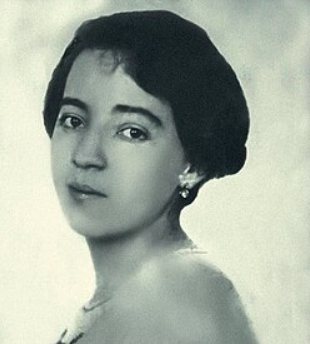
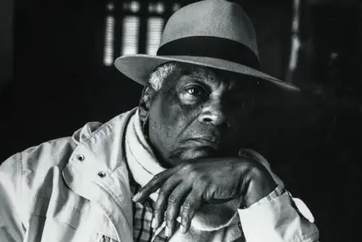
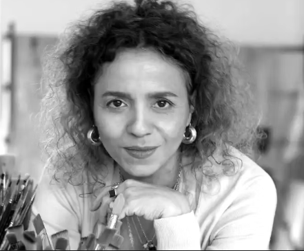

X


Anita Malfatti (1889–1964) foi uma importante pintora brasileira e uma das precursoras do modernismo no Brasil. Ela nasceu em São Paulo e estudou arte na Europa e nos Estados Unidos, onde teve contato com estilos modernos como o Expressionismo. Em 1917, Anita realizou uma exposição em São Paulo que apresentou pinturas com cores fortes, formas diferentes e muita expressão. Na época, essas obras foram muito criticadas, mas ajudaram a iniciar uma grande mudança na arte brasileira.

Emanoel Araújo (1940–2022) foi um importante artista plástico, escultor, gravador e curador brasileiro. Ele nasceu em Santo Amaro e ficou conhecido por suas obras que valorizam a cultura afro-brasileira, a história e a identidade negra. Ao longo da carreira, produziu muitas esculturas, gravuras e pinturas, geralmente usando formas geométricas e madeira como material principal. Seu trabalho buscava destacar a contribuição da cultura africana na formação do Brasil. Além de artista, Emanoel Araújo também foi diretor do Museu Afro Brasil, em São Paulo, um museu dedicado à história e à cultura afro-brasileira.

Beatriz Milhazes (1960–) é uma importante artista plástica brasileira, conhecida principalmente por suas pinturas coloridas e cheias de formas geométricas. Ela nasceu em Rio de Janeiro e se tornou uma das artistas brasileiras mais reconhecidas internacionalmente. Suas obras misturam arte contemporânea com elementos da cultura brasileira, como cores fortes, padrões decorativos, flores e referências ao carnaval e à arte popular. Características das obras uso de cores muito vibrantes presença de círculos e formas geométricas inspiração na cultura brasileira e na natureza